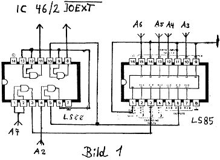

80-Bus Journal |
Juni 1983 · Ausgabe 6 |
Außerdem erzeugt diese Schaltung auch noch das /MEMEXT-Signal und damit zugleich die Möglichkeit, für CP/M-Betrieb die unteren 4K beliebig ein- und auszublenden. Auf den 2. Steckplatz habe ich eine kleine Zusatzschaltung gesteckt, die die /IOEXT-Dekodierung vornimmt (s.u.), da ich ja sonst die zusätzlichen IO-Bausteine der CPU-Karte nicht einsetzen könnte. Dabei kann auch die PIO der Grundkarte weiterverwendet werden. Den Takt beziehe ich vom Nascom-1; den Taktgenerator auf der CPU-Platine habe ich mit einem anderen Quarz bestückt und auf einen Takteingang der SIO gelegt (damit will ich in Zukunft einen Video-Rekorder als Massenspeicher ansteuern). Der zweite SIO-Kanal wird vom CTC versorgt. 2 CTC-Kanäle sind frei für beliebige Anwendungen. Ein SIO-Kanal ist auf eine V-24-Schnittstelle geführt, die ich aber nicht bestückt habe. Die CPU-Karte ist voll gepuffert und mit der nötigen Bussteuerlogik versehen. Kauft man sie als Leerkarte und bestückt sie selbst, dann muß man etwa 250,– DM anlegen und ersetzt damit ein Buffer Board, eine I/O-Karte und eine Monitor-Umschaltkarte.
Will man die I/O-Adressen des Nascom-1 vollständig dekodieren, dann muß ein externes Signal zugeführt werden, das immer dann LOW ist, wenn eine der 8 untersten Adressen (0-7) angesprochen wird. Das ist an sich ganz simpel; ärgerlich ist nur, daß dann die PIO der Grundplatine nicht mehr benutzt werden kann. Die hier abgebildete kleine Schaltung vermeidet diesen Nachteil (Bild 1). Ausgang A wird mit /IOEXT auf dem Bus oder an der Lötbrücke auf der Grundplatine verbunden, Ausgang B wird an den Sockel von IC 46, Pin 2 gelegt; das zugehörige IC-Beinchen muß aus der Fassung raus! Als Eingang erwartet die Schaltung die Adreßleitungen A3 – A7, deshalb empfiehlt sich der Bau eines kleinen Moduls, das man etwa in einen freien EPROM-Platz stecken kann. Wenn man z.B. das Betriebssystem in ein 2716 schießt, hat man den Platz sogar auf der Nascom-1-Grundplatine frei.
Will man CP/M oder damit kompatible Software auf dem Nascom laufen lassen, muß der Speicherbereich von 0-FFFH mit RAM belegt sein. Dort liegen aber normalerweise NAS-SYS, der Bildschirmspeicher und 1K Arbeitsspeicher. Es muß also die Möglichkeit gegeben sein, hier wahlweise RAM oder die unteren 4K der Grundplatine einzublenden, wobei für CP/M-Betrieb NAS-SYS durch ein BOOT-Eprom ersetzt wird. Ich wollte aber auch noch die Möglichkeit offen halten, NAS-SYS im Eprom zu behalten, um die Betriebssystemroutinen bei Bedarf aufzurufen. Eine minimale Hardware-Erweiterung ermöglicht sowohl das Ein- und Ausblenden der unteren 4K als auch eine Erweiterung des Adreßbereichs auf 128K RAM. Voraussetzung ist nur, daß sich im System eine RAM-Karte mit einem DESELECT-Eingang befindet, bei der auch die unteren 4K bestückt bzw. adressierbar sind. Das ist bei jeder dyn. 64K-Karte der Fall, weil ja immer ein Monitor- oder Boot-Eprom einblendbar sein muß. Auf dem 80-BUS heißt das Signal /RAM DISABLE (Busleitung 9); auf dem ECB-Bus ist es nicht als Standard definiert, wird aber in der Regel als /DESELECT auf Bahn 26a gelegt. Es bietet sich nun an, das /MEMEXT-Signal auf die /DESELECT-Leitung zu legen; damit wird der interne Speicher des Grundsystems ein- und der externe Speicher ausgeblendet. Schaltet man noch ein Gatter dazwischen, dann kann man mit einem Bit eines Output-Ports im Bereich 0-4K zwischen dem Speicher auf der Grundkarte und externem RAM umschalten. Man muß nur dafür sorgen, daß sich bei einem RESET definierte Verhältnisse einstellen, also entweder NAS-SYS oder das BOOT-Eprom eingeschaltet werden. Ich benütze Bit 5 von Port 0, das über ein ODER-Gatter mit /MEMEXT verknüpft wird. Falls noch keine /MEMEXT-Erzeugung vorhanden ist, kann man die restlichen 3 ODER-Gatter eines LS32 dafür benutzen (Bild 2). Um bei RESET die gewünschten Verhältnisse herzustellen, muß IC 41 (LS378) durch ein LS174 ersetzt werden. Diese beiden Latches sind pinkompatibel bis auf Pin 1. Beim LS378 ist das ein /ENABLE-Eingang, beim LS174 werden damit alle 6 Ausgänge zurückgesetzt. Trennt man also Pin 1 von IC 41 von Masse ab und verbindet den Anschluß mit der RESET-Leitung, dann ist dafür gesorgt, daß bei RESET der Speicher des Grundsystems eingeschaltet ist. Die gleiche Änderung ermöglicht auch eine Erweiterung des Adreßbereichs auf 128K (sofern man genügend Speicherund eine Banking-Logik auf der Speicherkarte hat). Dazu legt man einfach Bit 2 von Port 0 auf die Adreßleitung A16. Auf dem 80-Bus ist das Bahn 46, auf dem ECB-Bus ist diese Adreßleitung je nach Hersteller unterschiedlich gelegt. In der Regel müssen auch noch die höheren Adreßleitungen A17 – A19 auf Masse gelegt werden. Eine interessante Anwendung dieses einfachen Speicherbankings ist im Artikel BLS+ gezeigt. Dort wird auch eine einfache Ansteuersoftware im Assemblerlisting gezeigt.
| Seite 5 von 28 |
|---|